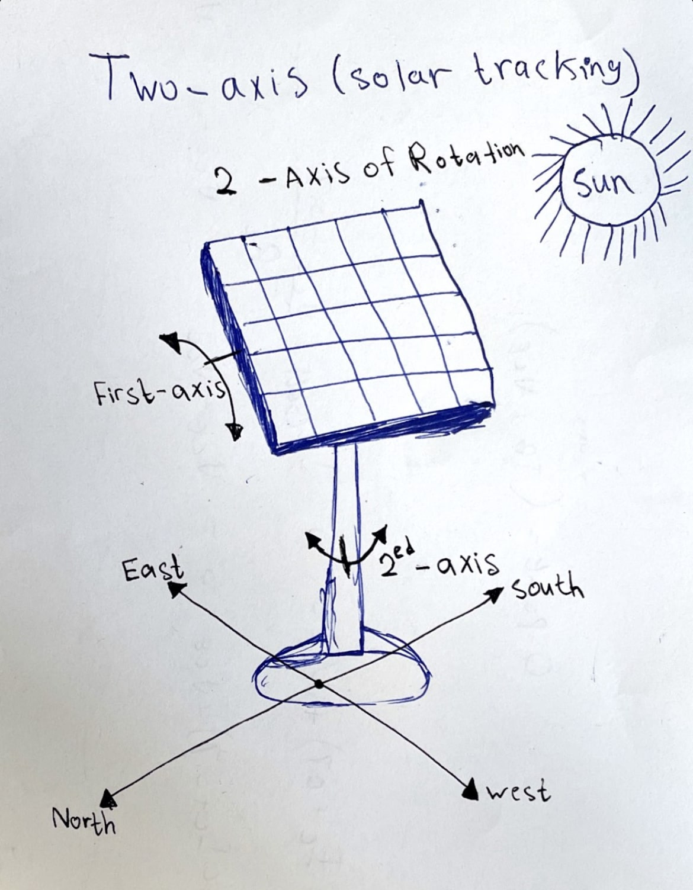

For the final project idea, I really enjoy thinking of new creative ideas. Although this time I have a lot of ideas going into my mind which makes me confused to select one of them. As a Computer Engineering student, I like to join Engineering and Computer and renewable energy, Thus, my final project is to create a solar panel that moves in a dual-axis with Solar radiation. This robot can be beneficial not only for countries with similar climates as the UAE (Sunny climate) but even the countries that have (Cloudy climate) since the solar panel will move with the light source.

The aim of this project is to absorb the sunlight that emits as much as possible, which will benefit us by producing more and more energy in the same period of time.
The solar panel will track the light source which is the sun light then the same pross will be on when energy from the sunlight is absorbed by the PV cells in the panel. This energy creates electrical charges that move in response to an internal electrical field in the cell, causing electricity to flow. At the same time the Servos motor will track the light using (Photo resistor) or (Light Dependent Resistor (LDR)).
The solar energy can be reused as it is non-renewable resource.
This also saves money as there is no need to pay for energy used (excluding the initial setup cost).
Helps in maximizing the solar energy absorption by continuously tracking the sun.
These panels can be used to power the traffic lights and streetlights.
These can be used in home to power the appliances using solar power.
These can be used in industries as more energy can be saved by rotating the panel.